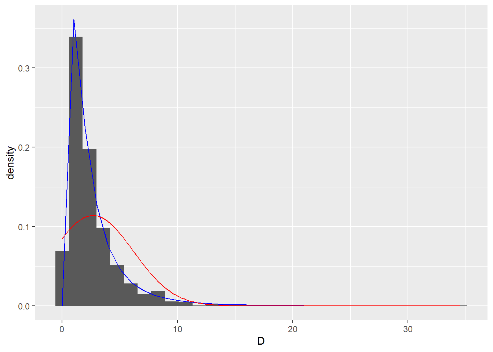

3 A new model for commrecial data
As mentionned in the introduction, every commercial catch is reported by statistical area/vessel/gear and correspond potentially to several VMS ping. Let’s denote \(D_j\) a reported catch associated to \(|\mathcal{P}_j|\) VMS ping at positions \(\left\lbrace x_i, i\in \mathcal{P}_j \right\rbrace\). \(D_j\) is the sum of all individuals catch at the \(n_j\) visited fishing points:
\[\begin{equation} D_{j} = \sum_{i \in C_j} Y_i, \tag{3.1} \end{equation}\]
\(C_j\) begin the vector of all fishing events associated with the logbook entry \(j\).
This diffculty is currently addressed by reallocating the total catch to individual fishing events with a simple proportionality rule: \[\tilde{Y_i} = \frac{1}{|C_j|} D_j.\]
\(\tilde{Y}_i\) is the assumed to follow the observation model defined (3.1).
A more satisfying solution would consist in deriving the distribution of \(D_j\) from the distribution of \(Y_i\). However the sum of a mixture of delta lognormal random variables do not resume in a nice known distribution.
An alternative would be to fit a delta lognormal model whose proportion of zero and the two first moments coincide i.e
\[\begin{align} P(D_j = 0 \vert S, X) & = \prod_{i\in \mathcal{P}_j} P(Y_i = 0 \vert S, X),\nonumber \\ & = \exp{ \left \lbrace- \sum_{i\in \mathcal{P}_j} e^{\xi S(x_i)}\right \rbrace} = \pi_j. \end{align}\]
The expected catch biomass is defined by \(E(D_j) = \sum_{i\in \mathcal{P}_j} E(C_i Z_i),\) while the expected positive catch biomass is defined by \[E(D_j\vert D_j >0) = \sum_{i\in \mathcal{P}_j} E(C_i Z_i\vert \exists i_0\in\mathcal{P}_j , C_{i_0}=1)\] As \(C_i\) and \(Z_i\) are assumed to be independant
\[\begin{align*} E(D_j\vert D_j > 0) & = E(D_j 1_{ \left \lbrace D_j > 0\right\rbrace } ) / P\left ( D_j > 0\right ), \\ & = E(D_j 1_{ \left \lbrace D_j > 0\right\rbrace } ) / \left (1-\pi_j\right). \\ \end{align*}\]
As \(E(D_j 1_{ \left \lbrace D_j > 0\right\rbrace } ) = E(D_j ),\)
\[\begin{align} E(D_j\vert D_j > 0) & = \left (1- \pi_j\right)^{-1} E(D_j) , \nonumber \\ & \left (1- \pi_j\right)^{-1} \sum_{i\in \mathcal{P}_j} E(C_i Z_i),\nonumber \\ & = \left (1- \pi_j\right)^{-1} \sum_{i\in \mathcal{P}_j} (1-p_i) \frac{\mu(x_i)}{1-p_i}, \nonumber \\ & = \left (1- \pi_j\right)^{-1}\sum_{i\in \mathcal{P}_j} \mu(x_i). \tag{3.2} \end{align}\]
Regarding the variance
\[Var(D_j \vert D_j >0) = E(D_j^2 \vert D_j >0)- E(D_j \vert D_j >0)^2.\]
But \(E(D_j^2 \vert D_j >0) = (1-\pi_j)^{-1} E(D_j^2 1_{\left \lbrace D_j >0\right\rbrace}) = (1-\pi_j)^{-1} E(D_j^2 )\) and
\(E(D_j \vert D_j >0)^2 = ((1-\pi_j)^{-1} E(D_j 1_{\left \lbrace D_j >0\right\rbrace}))^2 = (1-\pi_j)^{-2} E(D_j)^2\).
So that
\[Var(D_j \vert D_j >0) = (1-\pi_j)^{-1} E(D_j^2 ) - (1-\pi_j)^{-2} E(D_j)^2 = (1-\pi_j)^{-1} Var(D_j) - \frac{\pi_j}{(1-\pi_j)^2} E(D_j)^2.\]
As the \((Y_i )_{i\in \mathcal{p}_j}\) are independent, \(Var(D_j) =\sum_{i \in\mathcal{P}_j} Var(Y_i)\).
We are the lead to compute the Variance of \(C_i Z_i\).
\[\begin{align*} Var(C_i Z_i) & = E( C_i^2 Z_i^2 ) - E(C_i Z_i)^2,\\ & = E( C_i^2) E(Z_i^2 ) -E(C_i)^2 E(Z_i)^2,\\ & = p_i E(Z_i^2 ) - p_i^2 E(Z_i)^2 = p_i ( Var(Z_i) + (1-p_i) E(Z_i)^2),\\ & = p_i\left( \frac{\mu(x_i)^2 }{(1-p_i)^2} (e^{\sigma^2}-1) + (1-p_i) \frac{\mu(x_i)^2 }{(1-p_i)^2}\right),\\ & = \frac{p_i}{(1-p_i)^2} \mu(x_i)^2 \left(e^{\sigma^2} -p_i \right) \end{align*}\]
3.1 Numerical illustration
3.1.1 Precising the notation
As mentioned in Equation (??), \(Y\sim \mathcal{LN}(\mu, \sigma^2)\) stands a lognormal distribution such that \(E(Y) = \mu\) and \(Var(log(Y)) = \sigma^2\).
An alternative specification denotes \(Y \sim LN(\rho, \sigma)\) if \(E(log(Y))=\rho\) and \(Var(log(Y)) = \sigma^2\)
The code below is an helper to go back and forth between the different parametrizations.
LN_variance_v1 <- function(rho, sigma){
( exp(sigma^2) - 1 ) * exp(2* rho + sigma^2)
}
LN_mean_v1 <- function(rho, sigma){
exp( rho + sigma^2/2 )
}
LN_rho2mu <- function(rho, sigma){
LN_mean_v1(rho, sigma)
}
LN_mu2rho <- function(mu, sigma){
log(mu) - sigma^2 /2
}
LN_variance_v3 <- function(mu, sigma){
mu^2* (exp(sigma^2)-1)
}3.1.2 The sum of lognormal random variables is reasonnably log normal
3.1.2.1 n = 2
We are ready to look at the sum of 2 lognormal random variables with mean 0.493, 2.176 and variance 0.418, 8.135 .
## `stat_bin()` using `bins = 30`. Pick better value with `binwidth`.
3.1.3 n = 5
We are ready to look at the sum of 5 lognormal random variables with mean 1.476, 5.431, 0.315, 0.579, 0.289 and variance 3.743, 50.689, 0.17, 0.577, 0.144 .
## `stat_bin()` using `bins = 30`. Pick better value with `binwidth`.The expected value equals 8.0908454, while the mean equals 8.02238. The variance equals 55.3231921 and the empiric variance equals 48.7922239.